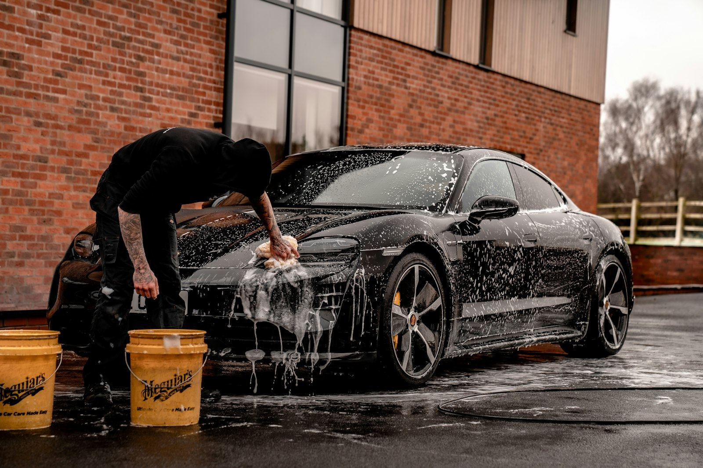
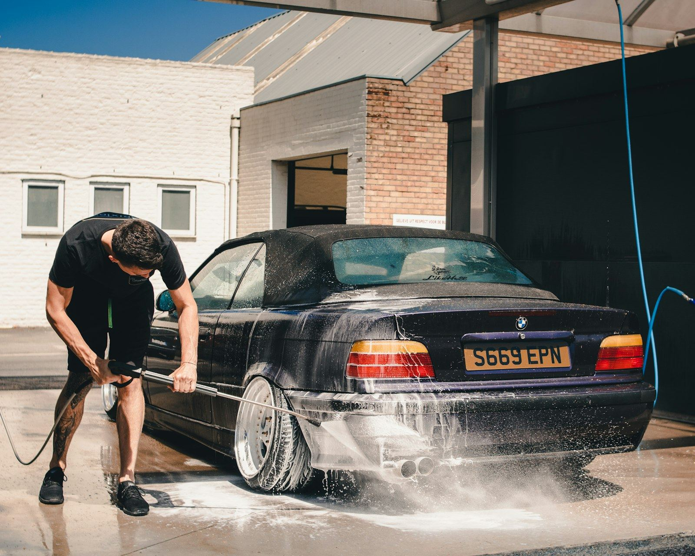

We come to you
Domino Effect Auto Detailing brings the full detailing shop to your driveway. Exterior, interior, and complete cleanups, done at your home or workplace.
Stock photo: detailer hand washing a foam covered car.
Serving Kiln, Hancock County, and the Gulf Coast corridor
How it works
Detailing without the drive
No shop visit, no waiting room. We show up with everything needed to clean your vehicle where it already sits.
Call to book
Call (228) 493-8072 and tell us about your vehicle and what it needs. Open daily 9:00 AM to 8:00 PM.
We come to you
We bring water, power, and professional products to your home or workplace anywhere in the service area.
You keep your day
Hand over the keys and get back to your day. Your vehicle is detailed on site and ready when you are.

Stock photo: detailer pressure washing a car.
What we do
Exterior and interior detailing
From a thorough exterior wash to a full interior reset, every detail is done by hand on site. See the full rundown on the services page, then call to schedule.
Customer rating
Recent shine
The work speaks
Sample stock photography showing the kind of finish a proper detail leaves behind.
Stock photo: sports car being rinsed with a water spray.
Stock photo: yellow sports car on an open road.
Stock photo: silver sedan parked outdoors.
Stock photo: detailer hand washing a foam covered car.
Hours
Open daily
- Hours: Monday through Sunday, 9:00 AM to 8:00 PM.
- Booking: Call (228) 493-8072 to schedule. Phone bookings only.
- Service: Fully mobile. No storefront, so we never ask you to come to us.